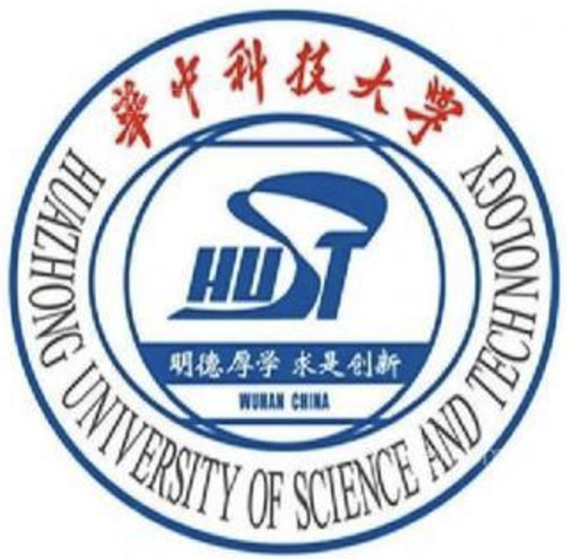

|
Tingrui Shen I am an undergraduate student in Computer Science at South China University of Technology and an incoming master's student at Peking University. My work focuses on 3D generation, world models, and embodied AI. I have worked with research groups at Singapore Management University, Peking University, and Huazhong University of Science and Technology, and with industry teams at Tencent and VAST/Tripo3D on 3D mesh generation, multimodal learning, and embodied intelligence.
3D Generation
World Models
Embodied AI
Research and Engineering
|
|
Research Interests3D Generation
Geometry, Mesh, and Scene Synthesis
I work on structured generation for 3D assets and scenes. World Models
Simulation-Oriented Visual Intelligence
I am interested in scalable world modeling for physical and interactive environments. Embodied AI
Perception, Action, and Data Engines
I care about systems that connect perception, action, and real-world deployment. |
Research ExperienceDec 2025 - Present
Embodied Perception and InteraCtion Lab, Peking University
Research on embodied intelligence with Prof. He Wang.
Sep 2025 - Present
Ultra High Definition Immersive Media Lab, Peking University
Research on 3D generation with Prof. Ronggang Wang.
Aug 2023 - Present
Visual Understanding and Generation Lab, Singapore Management University
Remote research on human reconstruction, human-language interaction, and 3D generation with Prof. Shengfeng He.
Oct 2023 - Feb 2024
Embedded and Pervasive Computing Lab, Huazhong University of Science and Technology
Research on multimodal large language models with Prof. Min Chen.
 

|
Education
Undergraduate
South China University of Technology
GPA: 3.91 / 4.0
Incoming
Peking University
Incoming master's student in Shenzhen. |
PublicationsFirst-author
Image Placeholder
Image Placeholder
Under Review
Image Placeholder
Image Placeholder
QuadLink: Autoregressive Quad-Dominant Mesh Generation via Point-Relation Learning
Under review, 2026 Second-author
Image Placeholder
Other Authors
Image Placeholder
Image Placeholder
Stable Score Distillation
ICCV 2025 Image Placeholder
|
ProjectsImage Placeholder
Efficient 3D Reconstruction with Intelligent Sparse Perception
Developing sparse 3D reconstruction methods with factorized representations and deep convolutional networks. Image Placeholder
Surgical Image Recognition and Segmentation
Built a data pipeline from real surgical footage, including filtering, SAM-based annotation, and downstream model training. Image Placeholder
Embodied Medical Intelligence with Multimodal LLM Fine-Tuning
Curated and enhanced fabric-related multimodal data for fine-tuning large multimodal models in medical settings. Image Placeholder
Workshop Gas Leakage Detection
Designed a time-series detection and forecasting pipeline using simulation data, filtering, augmentation, and model training. |
Industry Experience
Visvise AI Lab, Tencent
Worked on 3D mesh generation, image-to-mesh systems, texture generation, and inference acceleration for production-oriented pipelines. 
Tripo3D, VAST
Exploring world models for embodied AI, with current projects on data engines and 3D scene reconstruction. |
|
Updated April 2026 |